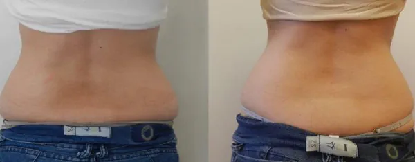

Body Flaccidity
How to Treat It?
If you are interested in us helping you with this topic:
Book Your Initial Consultation Now!If you are interested in us helping you with this topic:
Book Your Initial Consultation Now!Body flaccidity is a common condition that affects skin firmness in various areas of the body, such as arms, abdomen, thighs, and buttocks. This loss of firmness can be related to aging, rapid weight loss, or simply genetic factors. At our Aesthetic Center, we offer a variety of treatments to combat flaccidity and improve body contours.


At our Aesthetic Center, we have non-invasive and effective treatments to combat body flaccidity. The most popular include:

If left untreated, body flaccidity can worsen due to continued loss of collagen and elasticity in the skin. Factors like sun exposure and aging accelerate this process. That's why it is fundamental to treat it in time with technologies like Accent Prime and body radiofrequency, which help prevent further skin deterioration.
Results of treatments for body flaccidity vary according to the severity of the case and the treatment used. However, in general, you can expect a significant improvement in skin firmness and texture. Treatments like Accent Prime offer visible results after a few sessions, while others like body mesotherapy help revitalize the skin over several sessions.
